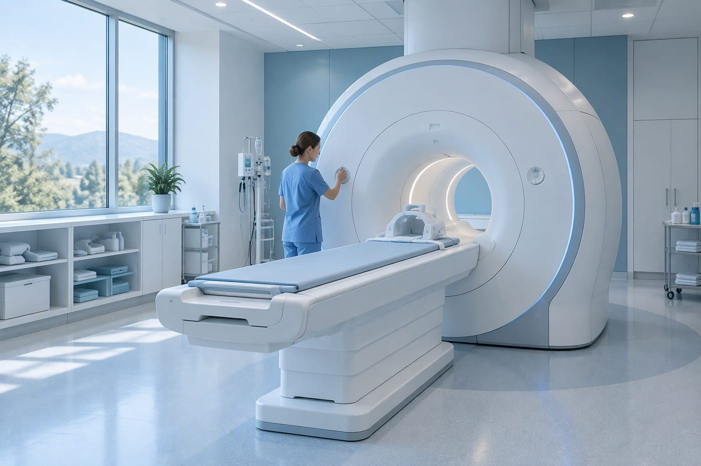
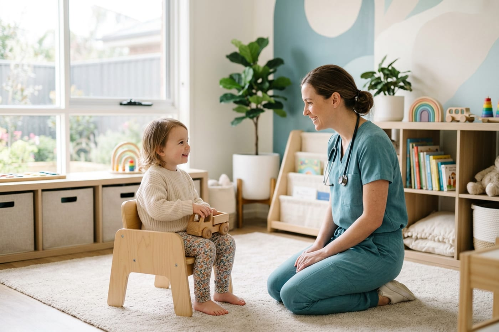
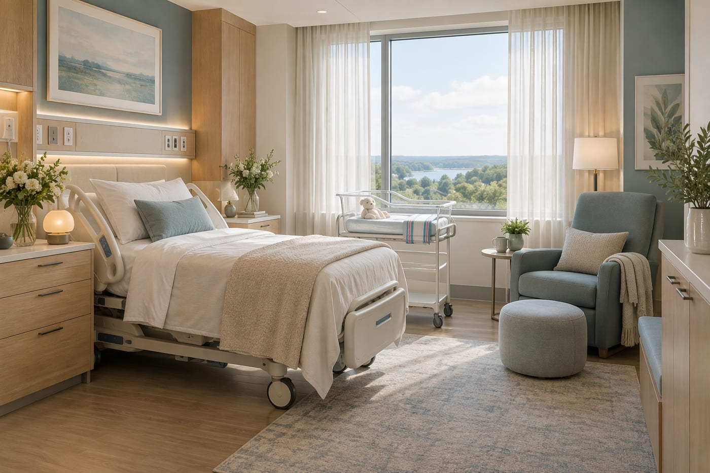

One campus. One connected team.
A hospital is not a building full of separate clinics. Our fictional departments are designed to work together — sharing records, plans and a single point of contact for you.
On this page
7
Featured departments
Acute, diagnostic, family and rehabilitation services on one site.
24/7
Emergency & imaging
Urgent imaging and laboratory support available around the clock.
1
Shared care record
Every department works from the same clinical plan.
Illustrative sample content for a fictional hospital demonstration.
Where care happens.
Each department has a clear role — and a responsibility to hand over well. These sample descriptions show how the pieces fit together.
Emergency department
Immediate assessment for serious injury and sudden illness, with resuscitation, monitoring and rapid access to imaging, theatre and critical care.
- Triage by clinical urgency, not arrival time
- On-site CT, ultrasound and laboratory
- Direct admission to inpatient teams when needed

Imaging & radiology
Ultrasound, CT, MRI, X-ray and breast imaging, reported by consultant radiologists and supported by radiographers and nurses.
- Clear clinical question before every scan
- Radiation safety and contrast review
- Results returned to the referring team
Laboratory services
Blood sciences, microbiology and pathology for emergency, inpatient and outpatient care, with urgent results prioritised by clinical need.
- Sample tracking from collection to result
- Critical results phoned to the clinical team
- Appointment-based outpatient blood tests
Surgery & theatres
Elective and emergency surgery supported by anaesthesia, recovery and sterile services, with pre-assessment before every planned procedure.
- Pre-operative assessment and planning
- Team brief and surgical safety checklist
- Recovery and physiotherapy from day one

Pediatrics
Outpatient clinics and inpatient care for children, designed around play, routine and keeping parents close.
- Separate waiting and play area
- Parents welcomed and included in decisions
- Support from children's nurses and play specialists

Maternity
Pregnancy, birth and postnatal care in private rooms, with midwifery, obstetric and neonatal teams working side by side.
- Midwife-led and consultant-led care pathways
- Private birth suites and partner space
- Newborn checks and feeding support
Physiotherapy & rehabilitation
Recovery programmes after injury, surgery, stroke or a long hospital stay, built around the activities that matter to each person.
- One-to-one physiotherapy and exercise programmes
- Cardiac and pulmonary rehabilitation
- Home exercises and follow-up review
Department descriptions, hours and facilities are fictional sample content.
A sample floor guide.
Arriving somewhere unfamiliar is stressful. This is how our fictional campus is laid out, with step-free routes and staffed help points on every level.
Accessibility
Lifts, accessible bathrooms and hearing loops are available on all patient floors. Ask at reception for mobility support or an interpreter.
| Level | Departments & services |
|---|---|
| Level 0 | Emergency department · Imaging & radiology · Laboratory · Main entrance & reception |
| Level 1 | Pediatrics · General medicine clinic · Outpatient phlebotomy · Cafeteria |
| Level 2 | Neurology · Dermatology · ENT · Eye centre · Outpatient clinics |
| Level 3 | Cardiology · Women's health · Maternity · Inpatient wards |
| Level 4 | Orthopedics · Operating theatres · Recovery · Physiotherapy & rehabilitation |
Illustrative floor plan for this fictional demonstration. In a real hospital, always ask staff for directions.
Looking for a specific service?
Use the service directory to search by name or type of care, or ask our fictional reception team for help.